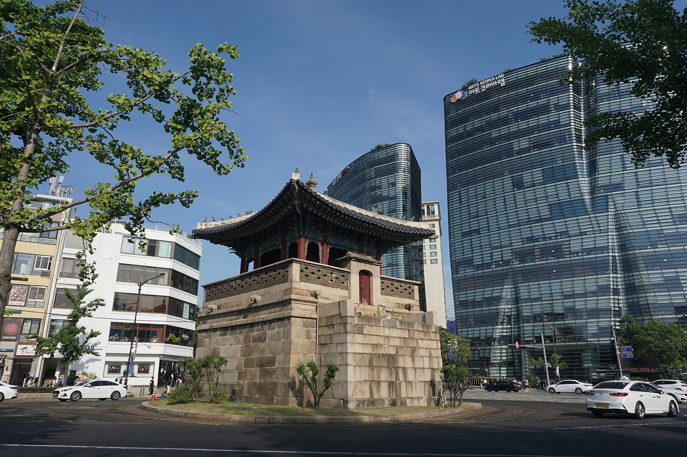
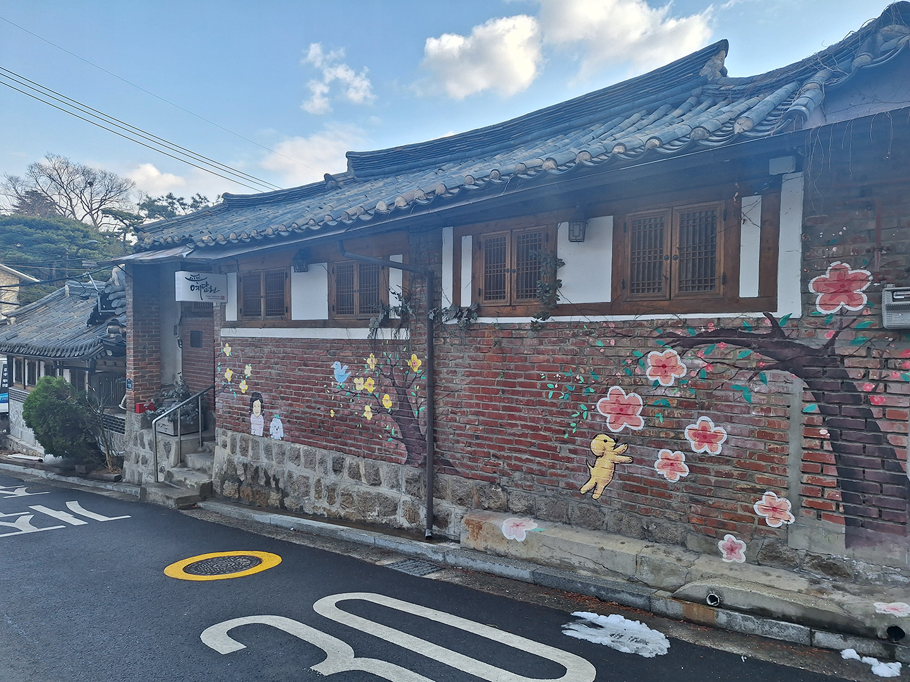
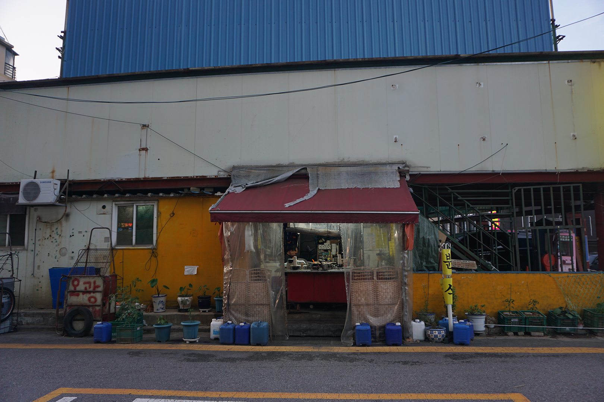
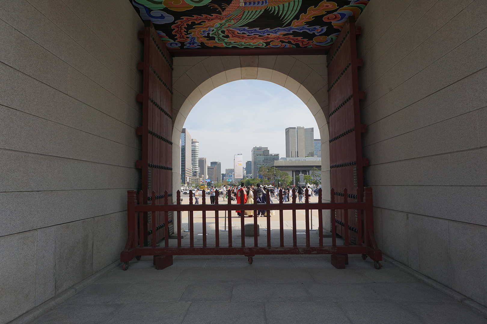

The Charm Of Seoul
A few days ago, I was near Yongsan station at one of the electronics markets in the area and I noticed across the street that two of the buildings had been demolished. They had previously housed a market of a bunch of sellers selling mostly various video games on the first floor and cameras on the second floor, among other things.
I felt a certain sense of sadness seeing that, as I had previously gone into that building many times to buy video games or even just browse the various video game systems they had.
While I knew in my head that it was the correct decision (those buildings were frankly run-down and disheveled, probably even a safety risk), in my heart, I mourned the loss of an old building that held the atmosphere of what I like best about Seoul.
You see, one of the main charms of Seoul to me is the mix between old and new. In the middle of this city, you can have a brand-new beautiful building right next to an old run-down building. And the mix contributes to quite a unique and cool vibe. There is nothing I like more than randomly walking into a small, unknown alley right after coming out of a new, modern building.
Background Korean History

A big contributing factor to the possibility of this has to do with some modern Korean history. Some of you may know and some of you may not, so I will briefly talk about it anyway.
Korea was occupied and exploited by Japan from 1910 until the end of WWII in 1945. By the end of the war, South Korea was one of the poorest regions in the world.
Then as most people know, the Korean War happened and South Korea became even poorer. Like poorer than North Korea poor.
After the war, South Korea didn’t improve that much due to unstable politics, dictatorships, and a MULTITUDE of other factors. Too much for me to feel I properly know enough about to write and talk about, without feeling like I might leave something important out.
South Korea didn’t even pass North Korea in GDP until the late 70s/early 80s! That means that in basically 50-60 years, South Korea went from one of the poorest countries in the world to one of the richest.
As such, there still remains quite a lot of old buildings and places, even in such a modern country. Most countries' growth was much more gradual and consistent, leading to a gradual change from pre-modern times to what we have now, whereas South Korea still has remnants scattered throughout.
The places I will talk about will probably not seem that related and they probably aren’t. But they all hold some type of this vibe that I have been talking about, so I encourage you to just walk around and explore if you get the chance.
Gwanghwamun Square

When talking about this topic, there is of course no more iconic location than Gwanghwamun Square. With various company buildings, museums, coffee shops, and more in modern buildings all lining the way on both sides leading up to the famous Gyeongbokgung Palace, there are countless things to do here.
There is the National Museum of Korean Contemporary History, where you can learn about recent Korean history and look at displays and memorabilia from the time. Then there is the actual square (more of a rectangle, really) that it is named after, which holds a beautiful walking path and square that often holds events and exhibitions.
For example, at the time of writing, there is currently a light show and a Christmas market running, but there are events running all the time throughout the year. Whenever I go there, there always seems to be an event of some kind happening.
Within the square, there are also two prominent statues of famous Korean figures, King Sejong the Great, founder of the Korean alphabet, Hangeul; and Admiral Yi Sun-sin, a legendary Korean general who is famous for his many naval victories and prowess, despite being vastly outnumbered and lacking supplies. There is also a small exhibition hall museum below the square where you can learn more about these two famous figures.
At the end of the square is Gyeongbokgung Palace, the main palace in Seoul and former home of the Korean royal family. Housed inside are both the National Palace Museum and the National Folk Museum. The palace is huge and you can spend a long time just exploring and walking around.
Unfortunately, most of it isn’t original though and is largely restored after lots of destruction during Japan’s occupation and the Korean War, but the government is constantly upgrading and restoring more buildings in the hopes of returning it to its former glory. When you get tired or hungry, there are plenty of cafes and restaurants in the area to rest and eat at.
Bukchon Hanok Village & Insadong

The next places I am going to recommend are located very close to Gwanghwamun, Bukchon Hanok Village and Insa-dong. Bukchon Hanok Village is a small neighborhood located in the northern part of Seoul, not far east of Gyeongbokgung Palace.
This area is really cool, because most of the buildings are built in the style of traditional Korean housing, or Hanok as seen in the name. The government has tried to create various regulations and restrictions to preserve as many of the Hanok and encourage the building of more of them in this area.
This has led to an interesting vibe where modern restaurants, cafes, and shops are existing within the older styled architecture. In this area there are so many random restaurants or shops you can pop into and browse. I especially like the ones that sell random knick-knacks and accessories.
I highly recommend just walking in the area and up random streets to see what you can find. One thing to note, though, is that this is in fact still a residential neighborhood. As such, the popularity of the area has led to various noise and other complaints. The government has even had to step in and restrict entrance to the village to times between 10am and 5pm, as of November 2024. So try to be as considerate and respectful as you can when you come to this area.
The other place that I like to link in with this recommendation is Insa-dong. This is actually a neighborhood on its own, but most of the time when people talk about it, they are referring to the culture street. This is an area with one main street and its various offshoots. I like to link this with Bukchon Hanok Village, because you can also find other more traditional items and art for sale.
If you are looking for souvenirs or Korean-styled items and art, this might be THE place to get them. You can find so many items here, from keychains to chopsticks to handheld fans.
In this area, there are also a lot of art studios and exhibitions, especially nestled into random alleys, so keep your eyes open and be aware of your surroundings! It also just feels right to go into one of the nearby tea cafes.
Markets

The final recommendation I am going to make isn’t one specific place, but rather a group of places. And that would be markets! There are so many markets throughout the city. The most famous of them being the Dongdaemun clothing markets, Gwangjang market, Namdaemun market, the Noryangjin fish market, and many more!
Dongdaemun is one of the most popular places to shop for clothes. There are so many cheap clothes you can find and a large variety of things to find. Gwangjang and Namdaemun are good for finding various street food dishes and small restaurants. And Noryangjin is a great place for you seafood lovers to search for good fish, shrimp, and other dishes.
There is so much more to be said about the markets, but I feel like that’s worthy of its own article. After all, this article is really about the charm of Seoul.
Conclusion

Seoul is just such a cool city with so much to see and that has what has attracted me and led me to live here so long. Rather than any specific amazing thing, it’s just the general vibe and atmosphere that makes it feel so lively and enjoyable to live in.
The old and new is just so alluring. But I can only hope that it continues to be this way. Seoul continues to develop at a breakneck pace.So many old buildings are being demolished and replaced with high-rise apartments and buildings.
A trend that I fear is going to actually be catastrophic in the not so far future, especially with Korea’s current declining population situation. I feel like so many of these buildings are going to end up hurting financially and go bankrupt due to lack of residents. I’ve said this before and so many people are like “OH CHEAP HOMES”, but I feel like they don’t realize that that will absolutely crush the economy and make it very difficult for them to actually buy these homes.
I hope that maybe the building plans in Seoul can look more towards building smaller, yet stylish, unique, and cool buildings. I would hope that Seoul can continue to preserve its unique and cool vibe.
Nevertheless, there will still be many places nestled in between all the craziness and development for a long time to come. So, like I have said multiple times in this article, just walk around and explore! See what you can find and take in the Charm of Seoul!